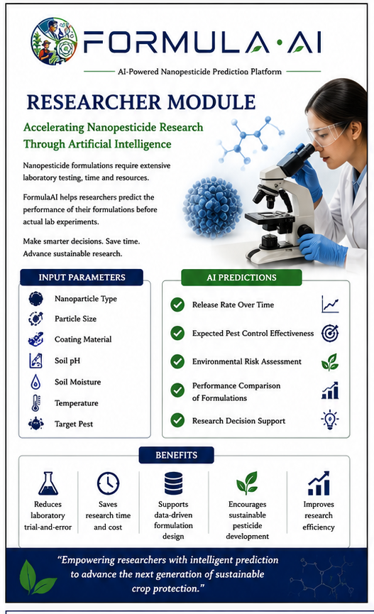

Part 1
For researchers
Enter a formulation's parameters — nanoparticle type, particle size, coating, soil pH, moisture, temperature — and the model predicts how it will actually behave.
- Release rate over time
- Effectiveness against the target pest
- Environmental risk score